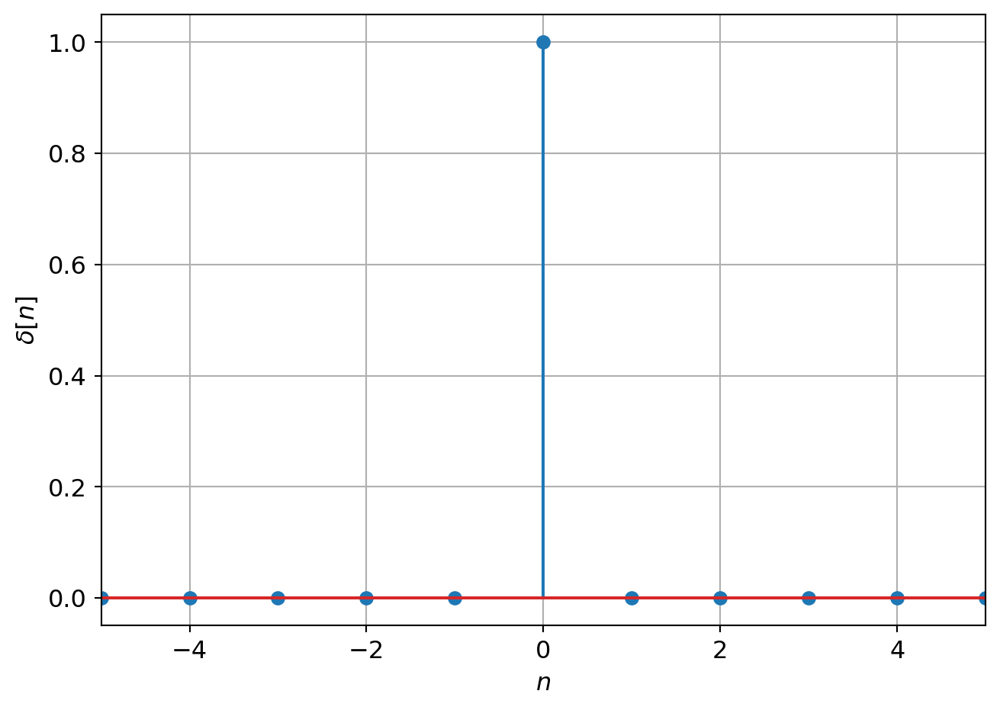
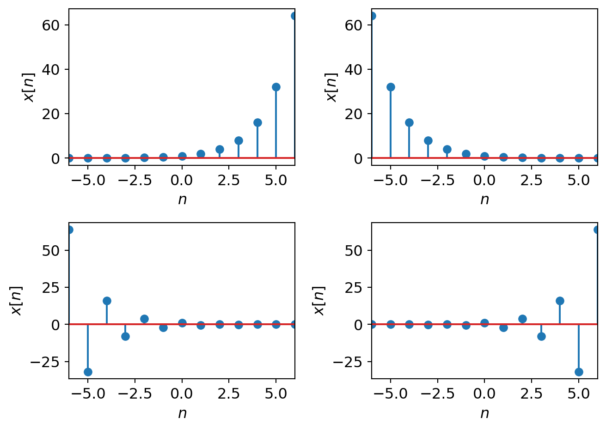
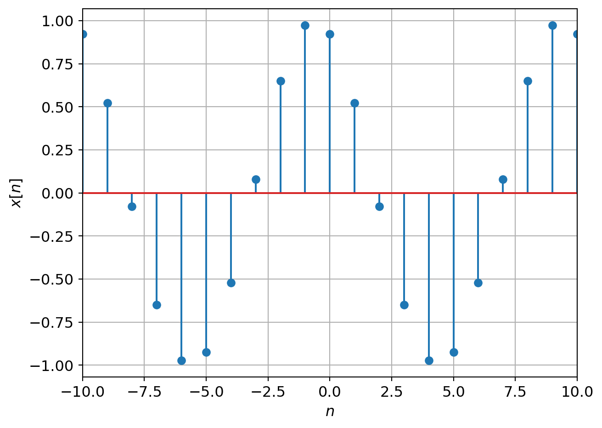
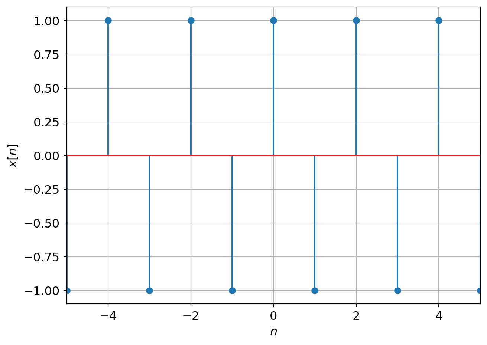
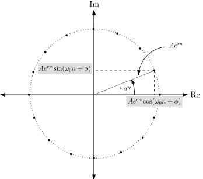

3 Discrete-Time Signals
Recall from the previous chapter that a discrete-time (DT) signal is modeled as a function \(f: \mathbb{Z} \rightarrow \mathbb{C}\). We will write these as \(x[n]\), \(y[n]\), etc. Note \(n\) is dimensionless. These are graphically plotted as stem or “lollipop” plots, as demonstrated in Chapter 2.
Since the domain \(\mathbb{Z}\) is usually interpreted as a time index, we will still call these time-domain signals. In the time-domain, when the co-domain is \(\mathbb{R}\) we call these real DT signals. Unlike with CT signals there are no physical limitations requiring DT signals to be real, since in discrete hardware, a value at a given index can be a complex number, i.e. just a pair of numbers. However it is computationally advantageous to restrict ourselves to real arithmetic and such signals are often converted to or from CT signals, which do have to be real. For this reason, real DT signals dominate in models.
3.1 Primitive Models
As with CT signals, we mathematically model DT signals by combining elementary/primitive functions, for example:
- polynomials: \(x[n] = n\), \(x[n] = n^2\), etc.
- transendental functions: \(x[n] = e^n\), \(x[n] = \sin(n)\), \(x[n] = \cos(n)\), etc.
- piecewise functions, e.g. \[ x[n] = \left\{ \begin{array}{cl} f_1[n] & n < 0\\ f_2[n] & n \geq 0\\ \end{array}\right. \]
Definition
The DT counterpart of the CT step function is the DT Unit Step, \(u[n]\): \[u[n] = \left\{ \begin{array}{cl} 0 & n < 0\\ 1 & n \geq 0\\ \end{array}\right.\] Note, there are not continuity issues at \(n=0\) as DT functions have discrete domains.
Example
A sampled signal modeling the air pressure of a specific tone, sampled at 8kHz, might be \[x[n] = \sin\left(2\pi (261.6) \tfrac{1}{8000} n\right)\] Such DT signals are commonly used in digital music generation, storage, and playback.
Example
Similarly, the sampled chord "G", an additive mixture of tones at G, B, and D and might be modeled as \[x[n] = \sin\left(2\pi (392) \tfrac{1}{8000} n\right) + \sin\left(2\pi (494) \tfrac{1}{8000} n\right) + \sin\left(2\pi (293) \tfrac{1}{8000} n\right)\] again sampled at 8kHz. This example shows we can use addition to build-up signals to approximate real signals of interest.
3.2 Basic Transformations
Similar to CT signals, we can also apply transformations to DT signals to increase their modeling flexibility.
magnitude scaling \[x_2[n] = a x_1[n]\] for \(a \in \mathbb{R}\).
time differences \[x_2[n] = x_1[n] - x_1[n-1]\]
running sums \[x_2[n] = \sum\limits_{m = -\infty}^{n} x_1[m]\]
sums \[y[n] = \sum\limits_{i} x_i[n]\] an important example we will see is the DT Fourier series.
multiplication (modulation) \[y[n] = x_1[n] x_2[n]\]
time index shift \[x_2[n] = x_1[n+m]\]
if \(m < 0\) it is called a delay
if \(m > 0\) it is called an advance
time reversal \[x_2[n] = x_1[-n]\]
decimation \[y[n] = x[m n]\] for \(m \in \mathbb{Z}^+\).
e.g. for \(m=2\) only keep every other sample
e.g. for \(m=3\) only keep every third sample
etc.
interpolation \[y[n] = \left\{ \begin{array}{cl} x\left[ \frac{n}{m}\right] & n = 0\; , \; \pm m, , \; \pm 2m \cdots\\ 0 & \mbox{else} \end{array}\right.\] When \(m = 2\) this inserts a zero sample between every sample of the signal.
3.3 Characterization of Signals
There are a few basic ways of characterizing DT signals.
Definition
A DT signal is causal if \(x[n] = 0\) \(\forall n < 0\).
Definition
A DT signal is anti-causal or acausal if \(x[n] = 0\) \(\forall n \geq 0\).
A DT signal can be written as the sum of a causal and anti-causal signal.
A DT signal is periodic if \(x[n] = x[n + N] \; \forall n\) for a fixed period \(N \in \mathbb{Z}\).
A DT signal is even if \(x[n] = x[-n] \; \forall n\).
A DT signal is odd if \(x[n] = -x[-n] \; \forall n\).
Any DT signal can be written in terms of an even and odd component \[x[n] = x_e[n] + x_o[n]\] where \[\begin{array}{ll} x_e[n] &= \frac{1}{2}\left\{x[n] + x[-n]\right\} \\ & \\ x_o[n] &= \frac{1}{2}\left\{x[n] - x[-n]\right\} \end{array}\]
Analogous to CT signals, the energy of a DT signal is \[E_x = \lim_{N\rightarrow\infty} \sum\limits_{-N}^N \lvert x[n]\rvert^2 \; .\]
And the power of a DT signal is the energy averaged over an interval as that interval tends to infinity.
\[P_x = \lim_{N\rightarrow\infty} \frac{1}{2N+1} \sum\limits_{-N}^N \lvert x[n]\rvert^2 \; .\]
DT Signals with finite, non-zero energy and zero power are called energy signals. DT Signals with finite, non-zero power (and by implication infinite energy) are called power signals. These categories are non-exclusive, some signals are neither energy or power signals.
3.4 DT Unit Impulse Function
In DT the unit impulse function, denoted \(\delta[n]\) is defined as \[\delta[n] = \left\{ \begin{array}{ll} 1 & n = 0\\ 0 & \text{else} \end{array} \right.\] Note this definition is straightforward compared to the CT impulse as there are no continuity issues and it is not defined in terms of a distribution. It is typically drawn as
Some useful properties of the DT impulse function are:
Energy is 1: \(\sum\limits_{n=-\infty}^{\infty} \delta[n] = 1\)
Sampling: \(x[n]\delta[n-n_0] = x[n_0]\delta[n-n_0]\)
Sifting: \(\sum\limits_{n=-\infty}^{\infty} x[n]\delta[n-n_0] = x[n_0]\)
The impulse can be defined in terms of the step: \[\delta[n] = u[n] - u[n-1]\] and vice-versa \[u[n] = \sum\limits_{m=-\infty}^{n} \delta[m]\] or \[u[n] = \sum\limits_{k=0}^{\infty} \delta[n-k]\]
3.5 DT Complex Exponential
The DT Complex Exponential is defined in a similar fashion the the CT version, but with some important differences. The general DT complex exponential is given by the expression: \[x[n] = Ce^{\beta n}\] where in general \(C \in \mathbb{C}\) and \(\beta \in \mathbb{C}\). It is sometimes convenient (for reasons we will see later) to write this as \[x[n] = C \alpha^n\] where \(\alpha = e^{j\theta}\) is a complex number \(\alpha = \cos(\theta) + j\sin(\theta)\).
We now examine several special cases.
3.5.1 DT Complex Exponential: real case
Let \(C\) and \(\alpha\) be real, then there are four intervals of interest:
\(\alpha > 1\)
\(0 < \alpha < 1\)
\(-1 < \alpha < 0\)
\(\alpha < -1\)
Each of these are shown in Figure 3.2.

3.5.2 DT Complex Exponential: sinusoidal case
Let \(C = 1\). When \(\beta\) is purely imaginary, \(\beta = j\omega_0\) \[x[n] = e^{j\omega_0 n}\]
As in CT, by Euler’s identity: \[e^{j\omega_0 n} = \cos(\omega_0 n) + j\sin(\omega_0 n)\] and \[\Re(x[n]) = \cos(\omega_0 n) = \frac{1}{2}\left( e^{j\omega_0 n} + e^{-j\omega_0 n} \right)\] \[\Im(x[n]) = \sin(\omega_0 n) = \frac{1}{2j}\left( e^{j\omega_0 n} - e^{-j\omega_0 n} \right)\]
The energy and power are the same as for the CT complex sinusoid: \(E_x = \infty\) and \(P_x = 1\).
3.5.3 DT Complex Exponential: sinusoidal case with phase shift
The general DT sinusoid is
\[x[n] = A\cos(\omega_0 n + \phi)\]
\(A\) is called the amplitude
\(\phi\) is called the phase shift
\(\omega_0\) is now in radians (assuming \(n\) is dimensionless)

For CT sinusoids as \(\omega_0\) increases the signal oscillates faster and faster. However for DT sinusoids there is a "fastest" oscillation.
\[e^{j\omega_0 n}\rvert_{\omega_0 = \pi} = e^{j\pi n} = (-1)^n\]

3.5.4 Properties of DT complex sinusoid
If we consider two frequencies: \(\omega_0\) and \(\omega_0+2\pi\). In the first case: \[x[n] = e^{j\omega_0 n}\] In the second case: \[\begin{array}{ll} x[n] &= e^{j(\omega_0+2\pi) n} \\ &= \underbrace{e^{j2\pi n}}_{\text{always 1}}\; e^{j\omega_0 n} \\ &= e^{j\omega_0 n} \end{array}\]
Thus the two are the same signal. This has important implications later in the course.
Another difference between CT and DT complex sinusoids is periodicity. Recall for a DT signal to be periodic with period \(N\) \[x[n] = x[n+N] \; \forall n\] Substituting the complex sinusoid \[e^{j\omega_0 n} = e^{j\omega_0 (n+N)} = e^{j\omega_0 n}e^{j\omega_0 N}\] requires \(e^{j\omega_0 N} = 1\), which implies \(\omega_0 N\) is a multiple of \(2\pi\): \[\omega_0 N = 2\pi m \;\;\; m = \pm 1, \pm 2, \cdots\] or equivalently \[\frac{|\omega_0|}{2\pi} = \frac{m}{N}\] thus \(\omega_0\) must be a rational multiple of \(\pi\).
Two DT complex sinusoids are harmonics of one another is both are periodic in \(N\), i.e when
\[x_k(t) = e^{jk\frac{2\pi}{N} n} \; \text{for} \; k = 0, \pm 1, \pm 2, \cdots\]
This implies there are only \(N\) distinct harmonics in DT.
3.5.5 DT Complex Exponential: general case
In the general case we get a sinusoid signal modulated by an exponential. Let \(C = Ae^{j\phi}\) and \(\beta = r + j\omega_0\), then \[x[n] = C e^{\beta n} = Ae^{j\phi} e^{(r+j\omega_0)n}\] Expanding the terms and using Euler’s identity gives:
\[x[n] = \underbrace{Ae^{rn}\cos(\omega_0 n+\phi)}_{\Re \text{part}} + j \underbrace{Ae^{rn}\sin(\omega_0 n+\phi)}_{\Im \text{part}}\] Each part is a real sinusoid whose amplitude is modulated by a real exponential.
The visualization of the general case is to view the signal \(x[n]\) as a vector rotating through fixed angles in the complex plane.
